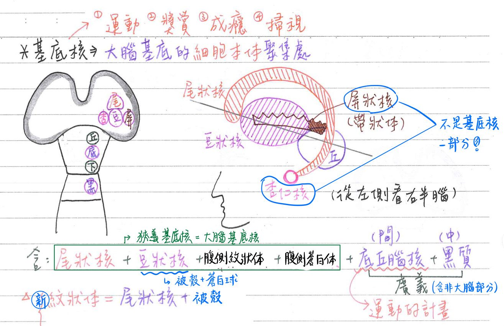
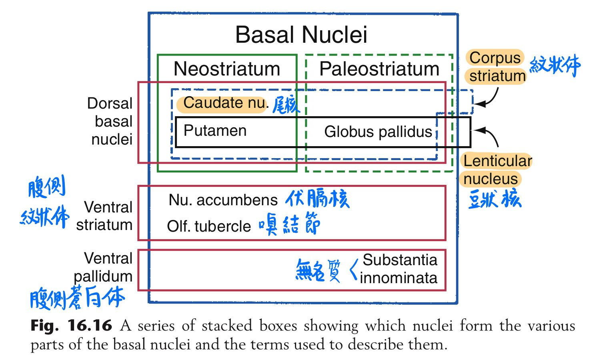
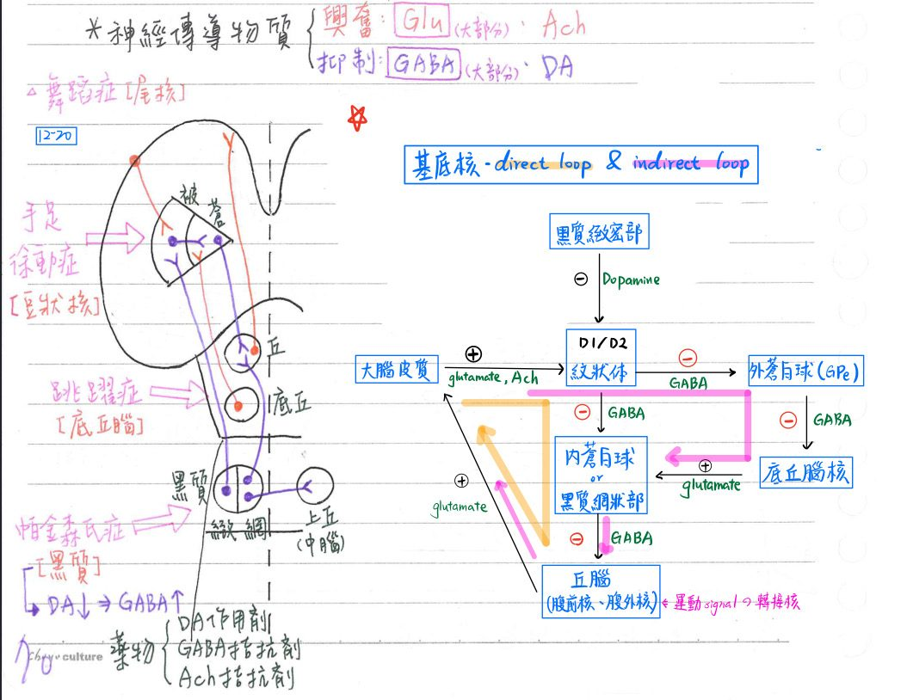
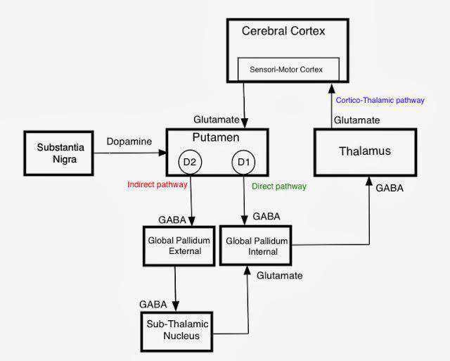
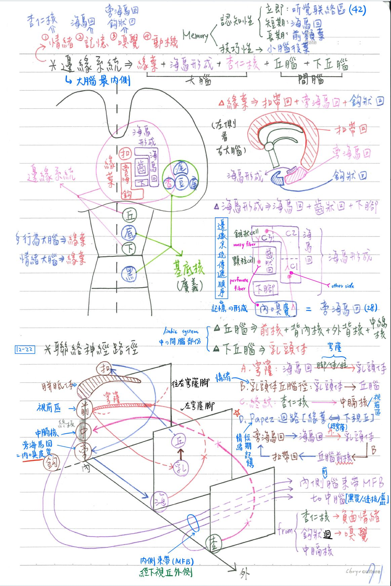
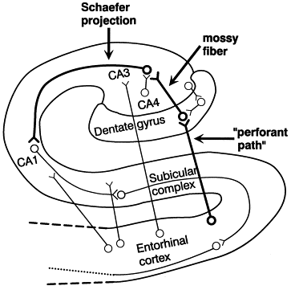

🧠 CNS-大腦：基底核&邊緣系統
基底核(basal gnglion)：位於大腦半球底部內側之神經核
大腦基底核(狹義基底核)[根據fundamental neuroscience修正過]
- (textbook版)基底核=尾核+豆狀核+腹側紋狀體+腹側蒼白體
- 基底核=尾核+豆狀核+
帶狀體(屏狀核)+杏仁核備註
- 此處以fundamental neuroscience 2017版教科書的內容為主(至少按這個寫國考不會有問題~~)
- 104-1(醫師一)某題(D)的解答：杏仁核不屬於基底核的一部分
- 108-1(醫師一)某題：杏仁核和邊緣系統不相關
- 新紋狀體(Neostriatum)＝紋狀體(Striatum)＝被殼(Putamen) + 尾核(Caudate nucleus)
舊紋狀體(Paleostriatum)＝ 蒼白體(Pallidum)＝蒼白球(Globus pallidus)
- ★紋狀體(striatum)：
- 新紋狀體(neostriatum]：★★尾核(caudate nu.)+被殼(putamen)
- 古紋狀體(paleostriatum)：豆狀核
- 腹側紋狀體=伏隔核(accumbens nu.)、
- 蒼白體(pallidum)：
- 背側：蒼白球(globus pallidus)
- 蒼白球(GP)=外蒼白球(ext. segment,GPe)+內蒼白球(int. sement, GPi)
- 腹側：腹蒼白體(ventral pallidum)
- 背側：蒼白球(globus pallidus)
- 豆狀核(lentiform nu.)=被殼(putamen)+蒼白球(globus pallidus)
- 被殼：最易發生出血性腦中風
- 以內囊前肢：與尾核(頭部)相隔
- 以內囊後肢(由★前脈絡叢A供應)：與丘腦相隔
- 以外囊：與屏狀核(=帶狀體,claustrum)相隔
廣義的基底核：把不是大腦的，但也負責動作協調的也列進来
- 底丘腦核(subthalamus)：位於★間腦
- 黑質(substantia nigra)：位於中腦
- 黑質(SN)可分為：緻密部(pars compacta, SNc)+網狀部(pars reticulata, SNr)


[重點]基底核的血液供應
- 前方小部分：前大腦A→中央枝(central br.)
- 中央大部分：★中大腦A→中央枝(central br.)→豆紋A(lenticulostriate a. = lateral striate arteries
- 後方小部分：內頸A→★[109-1]前脈絡叢A(ant. choroidal a.)
基底核-功能
- 隨意運動的計畫(motor planing)：將抽象想法轉化成具體步驟(★運動執行跟尾狀核有關！)
- 與直接迴路(direct loop)與間接迴路(indirect loop)有關
- 獎賞(reward)&成癮(addiction)
- 與伏隔核、腹側蒼白體、中腦之腹側被蓋區(ventral tegmental area)有關
- 眼球運動：如目視搜尋(saccade)[兩眼快速搜索(急動驟停)]
- 與尾核、黑質網狀部及中腦之上丘(superior colliculus)有關
[重點]基底核-主要神經傳導路徑
- 直接迴路(direct loop)：
- ★★路徑：大腦皮質→紋狀體(★被殼，含D1, D2受器)→內蒼白球/黑質網狀部→丘腦(腹前核、腹外核)→大腦皮質
- 抑制性突觸數量：★★2(凈興奮)[負負得正]
- 間接迴路(indirect loop)：
- ★路徑：大腦皮質一紋狀體(尾核+被殼)→★★外蒼白球→★★底丘腦核→蒼白球內節/黑質網狀部→丘腦(腹前核、腹外核)→大腦皮質
- 抑制性突觸數量：★★3(凈抑制)
- ★★★各pathway神經傳遞物種類?是興奮性還是抑制性?
主要神經傳遞物(neurotransmitter)
- 興奮性(excitatory)：麩胺酸(★glutamate)、Ach等
- 抑制性(inhibitory)：GABA、dopamine(D2)
基底核相關疾病
- 病徵：不自主運動、過動(hypcrkinetics)、少動(hypokinetics)
- 巴金森氏症(Parkinsonism)：★中腦黑質緻密部之退化(DA下降→GABA上升)
- 神經元可出現Lewy body：細胞質包涵體，含synuclein蛋白等
- 症狀：休息性抖顫(resting tremor)、肌肉僵硬(撲克臉)、動作徐緩、碎曳步伐、彎腰駝背、動作過少、寫字過小...
- 藥物治療：
- ★DA agonist：levodopa, carbidopa(強化levodopa作用)
- GABA antagonist
- 手足徐動症(athetosis)：豆狀核病變
→手足慢速、扭曲性、不自主的運動
- 杭亭頓氏舞蹈症(Huntington chorea)：尾核病變
→快速、抽搐性、不自主的運動，常合併鬼臉、怪聲
- 妥瑞氏症(Tourette syndrome)：被殼病變
→短暫快速、重複性且固著性之不自主運動或聲語(tics)
- 半側投擲症/跳躍症(hemiballism)：底丘腦核病變
→四肢近端大規模、投擲狀、不自主的運動


邊緣系統(limbic system)：位於大腦最內側
- ★組成元素：5個
- 緣葉(扣帶迴、旁海馬迴、鈎狀回)
- 緣葉：又稱為舊大腦
- 海馬形成(海馬迴、齒狀回、下腳)
- 杏仁核
- 丘腦
- 下丘腦(hypothalamus)
- 緣葉(扣帶迴、旁海馬迴、鈎狀回)
邊緣系統-構造
- 大腦部分：
- 海馬形成(hippocampal formation)=古大腦
- 組成(3個)：海馬回(hippocampus)、齒狀回(dentate)、下腳(subiculum)等
- [重點]海馬回分3區：CAI、CA2、CA3
- [重點]傳導順序：內嗅皮質→齒狀回→CA3區→CA1→内嗅皮質(旁海馬回)
(形成不斷回饋的神經網路→記憶的形成)- 齒狀回之顆粒細胞(granule cell)之軸突( mossy fiber)
→海馬回CA3區之錐狀細胞(pyramidal cell)
→傳至CAI區
→CAI區再傳至內嗅皮質(entorhinal cortex)(旁海馬回)備註
好像只有gray's anatomy有出現entorhinal area(醫師解剖上寫這個)這個詞，兩本神解的textbook都沒有出現，應該跟內嗅皮質是同個東西
- 補充：內嗅皮質不是只有嗅覺，還包含記憶形成、定向(navigation)以及時間知覺(perception of time)
- 齒狀回之顆粒細胞(granule cell)之軸突( mossy fiber)
- 緣葉(limbic lobe)=舊大腦、行為大腦、情緒大腦
- 組成(3個)：旁海馬回(parahippocampus=內嗅皮質)、扣帶回(cingulate)、鈎狀回(uncus=梨狀皮質)等
- 杏仁核(amygdala)：為邊緣系統&
(狹義)基底核的一部分，★可接受嗅覺訊息備註
趙神這邊有錯，(基底核不包含杏仁核)
- 海馬形成(hippocampal formation)=古大腦
- 間腦部分：
- 下丘腦(hypothalamus)：乳頭體(mamillary body)等
- ★丘腦(thalamus)：前核(anterior nu.)、背內核(dorsaomedial nu.)、外背核(lateral dorsal nu.)、中線核(midline nu.)等
邊緣系統-血液供應
- 內頸A→前脈络叢A(ant. choroidal a.)
- 後大腦動脈(PCA)
邊緣系統-聯絡神經路徑
- [重點]穹窿(fornix)：海馬回→乳頭體
- 海馬回→槽(alveus)→繸(fimbria)→穹窿腳(左右各一)→穹窿體(左右合一)→穹窿柱(左右各一)→乳頭體
- 乳頭體丘腦徑(mamillothalamic tract)： 和情緒相關
- 乳頭體→丘腦前核
- ★終紋(stria terminals)：
- 杏仁核→視前區(pre-optic area)、中膈核(septal nuclei)=前隔區(septal area)
- 其纖維跨越丘腦上方、位於尾核內側
- [重點]Papez 迴路：與情緒、短期記憶的形成相關
- ★路徑：旁海馬回→海馬回→乳頭體→丘腦前核→扣帶回→(旁海馬回)
- 穹窿(fornix)=海馬回→乳頭體；乳頭體丘腦徑=乳頭體→丘腦前核
- 為緣葉&下視丘間的神經迴路


邊緣系統-功能
- 情緒：正向(愉悅、溫馴等) & 負向(恐懼、悲傷、憤怒、攻擊)
- 左★杏仁核與正向情緒、右杏仁核與負向情緒較有關
- 記憶(memory)&學習(learning)：尤其★海馬回
- [重點]記憶分類：
- 事實性：(=認知性=宣示性=外顯性)
- 立即(immediate)：聽覺聯络區(42區)←數min~數hr
- 短期(short-torm)：海馬回←數hr〜2天
- 長期(long-term)：前額葉等大腦皮質←>2天
- 技巧性=步驟性=反射性=內隱性：★小腦(intermediate zone)
備註
不是後葉，參考自區段講義
因為記憶路徑是傳到小腦中間核
- 事實性：(=認知性=宣示性=外顯性)
- [重點]記憶分類：
- 嗅覺：尤其旁海馬回、鉤狀回 <cf>旁海馬回、鉤狀回位於顳葉內側
- 行為動機(motivation)、自我刺激(self-stimulus)
- 獎賞(reward)中樞：滿足/趨向
- 懲罰(punishment)中樞：厭惡/避開
- 緣葉又稱為：行為大腦、情緒大腦
[109-2提到]中隔區/前隔區(Septal Area)
- 位置：額葉的後下部分；邊緣系統的一部分
- 和愉悅的情緒相關：輸入路徑
- 杏仁核→終紋(stria terminals)→前隔核
- 嗅徑→部分medial olfactory striae→前隔核
- 海馬回→fornix→前隔核
- 和睡眠周期相關：
- 前隔核 →medial forebrain bundle(MFB)→ 縫核、藍斑
- 前隔核 →stria medullaris→韁繩核→位於大腦腳間核的網狀結構
📖 書本補充：與筆記不同或筆記沒寫到的地方
⚠️
以下為對照書本後整理，筆記原文未更動。標「筆記 vs 書」的是兩邊寫法不同、建議回頭確認的地方。
基底核的組成與名詞（p.451）
- 書的對照表：
- 基底核＝積核、尾核、被殼、蒼白球、黑質、丘腦下核。筆記 vs 書：筆記的狹義基底核只有尾核＋豆狀核，黑質與底丘腦核歸在「廣義基底核」；書的表格直接把積核、黑質、丘腦下核都列為基底核（分類範圍不同）。
- 豆狀核＝被殼＋蒼白球。
- 紋狀質（striatum）＝積核＋尾核＋被殼。
- 紋狀體（corpus striatum）＝積核＋尾核＋被殼＋蒼白球。
- 書的提示：腹側紋狀體＝積核＋尾核和被殼的腹內側部（筆記只寫腹側紋狀體＝伏隔核）。
- 圖108：杏仁核位在尾核尾部的末端（只是位置相鄰，書的考題 104-1-2 明確說杏仁體屬於邊緣系統、不是基底核，與筆記一致）。
- 考題 106-2-13：黑質不屬於紋狀體。
直接與間接環（p.452）
- 圖109的興奮／抑制：
- 興奮性：皮質→紋狀質、皮質→丘腦下核、丘腦下核→蒼白球（內節）、丘腦→皮質。
- 抑制性：所有進出蒼白球的纖維（紋狀質→蒼白球內／外節、蒼白球外節→丘腦下核、蒼白球內節→丘腦）。
- 直接環的推理：皮質興奮紋狀質→紋狀質加強抑制蒼白球（內節）→蒼白球對丘腦的抑制減弱→丘腦興奮皮質增強→整體加強運動。
- 書的提示：間接環就是多了丘腦下核參與其中。
- 黑質緻密部的多巴胺：經被殼神經元上的 D1 受體促進直接路線、經 D2 受體抑制間接路線，兩者的結果都是加強運動。
- 巴金森氏症：黑質緻密部多巴胺減少→無法同時促進直接、抑制間接路線→運動受到抑制。
海馬形成（p.467）
- 位置：側腦室下（顳）角的底部，在海馬旁回上方。
- 海馬回分區：CA1 接近下腳，CA2，CA3 最接近齒狀回。
- 皮質分層（三層古皮質）：
- 海馬回：分子層、錐狀細胞層、多形層。
- 齒狀回：分子層、顆粒細胞層、多形層。
- 下腳：三層古皮質與新皮質的交界。
- 白質：槽（alveus）→繖（fimbria）→穹窿（fornix）。
- 傳入：主要來自鼻內區（內嗅皮質），收集聯絡區的訊息；次要來自杏仁體、嗅覺及中隔核等。
- 傳出：繖延續成穹窿（雙向），到前連合以前和以後；另投射到鼻內區（再到聯絡區）及杏仁體。
- Papez 迴路（書的畫法）：扣帶回→鼻內區→海馬回→穹窿→乳頭體→乳頭體丘腦徑→丘腦前核→扣帶回。
- 書的提示：邊緣系統還包含杏仁體（情緒的感受及反應）、下丘腦、海馬旁回、扣帶回及中隔區等。
- 考題補充：
- 穹窿由海馬往乳頭體的順序：繖部→腳部→體部→柱部（左右腳往上靠近形成體部，再往下往前分開成柱部進入乳頭體）（112-1-4）。
- 前隔區（septal area）不屬於外側嗅覺區，它位在透明中隔前方；鉤迴、內鼻皮質、杏仁核則屬於外側嗅覺區（109-2-16）。
- 小腦齒狀核不屬於邊緣系統（106-2-1）。
📝 書中歷屆考題（點選答案作答）
101-1-26p.453
下列何處是突觸後多巴胺一型和二型受器 (D1/D2) 的主要分布地方？
102-1-1p.453
下列何者不是基底核 direct loop 的構造？
112-2-3p.453
下列何者不是基底核直接迴路 (direct basal ganglia pathway) 傳遞路徑的主要構造？
104-1-3p.453
下列有關丘腦下核 (subthalamic nucleus) 之敘述，何者錯誤？
💡 丘腦下核位於間腦。
106-2-13p.453
下列何者不屬於紋狀體 (corpus striatum)？
109-1-14p.453
關於基底核 (basal ganglia) 之敘述，下列何者錯誤？
💡 黑質會抑制間接迴路。
109-1-17p.453
基底核 (basal ganglia) 的直接迴路 (direct pathway) 不經過下列何構造？
104-1-2p.468
下列有關杏仁體 (amygdaloid body) 的敘述，何者錯誤？
💡 杏仁體是邊緣系統的一部分。
106-2-1p.468
下列何者不屬於功能性的邊緣系統 (limbic system)？
108-1-16p.468
海馬 (hippocampus) 最主要之傳入纖維 (afferent fiber) 來自何處？
112-1-4p.468
從海馬迴結構 (hippocampal formation) 至乳頭體 (mamillary body) 的穹窿 (fornix) 分為①體部 (body)、②繖部 (fimbria)、③柱部 (columns)、④腳部 (crura) 四個部位，依序為下列何者？
💡 穹窿由海馬的繖部延伸，往上形成腳部，左右腳往上靠近形成體部，最後往下往前分開為柱部進入乳頭體。
109-2-16p.468
下列何構造不屬於外側嗅覺區 (lateral olfactory area)？
💡 前隔區位在透明中隔（正中線）的前方，不屬於外側嗅覺區。
111-2-3p.468
乳頭體 (mamillary body) 發出乳頭丘腦束 (mamillo-thalamic fasciculus)，主要進入丘腦 (thalamus) 的那一神經核？